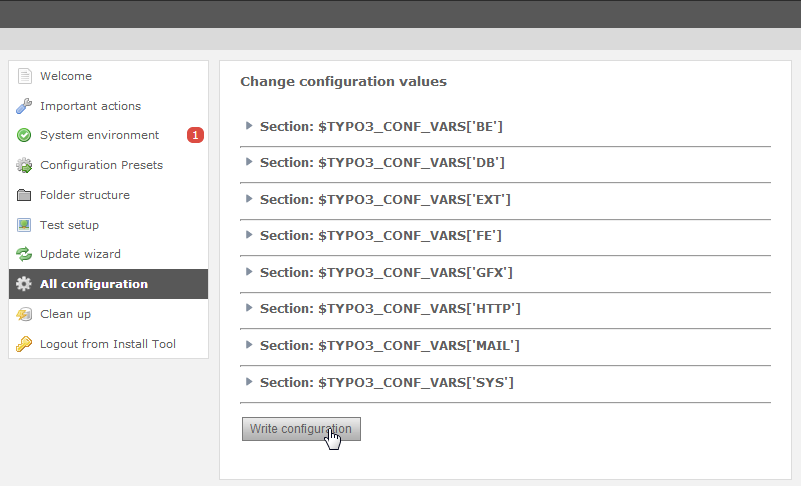
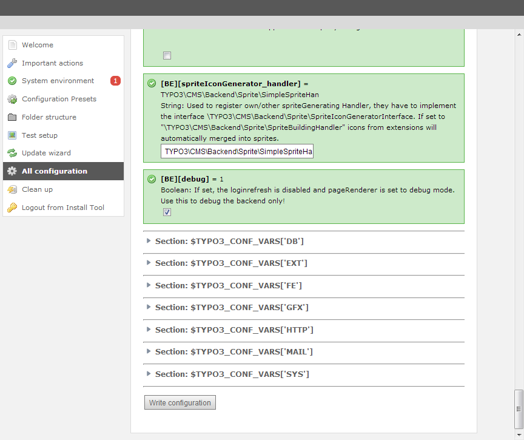
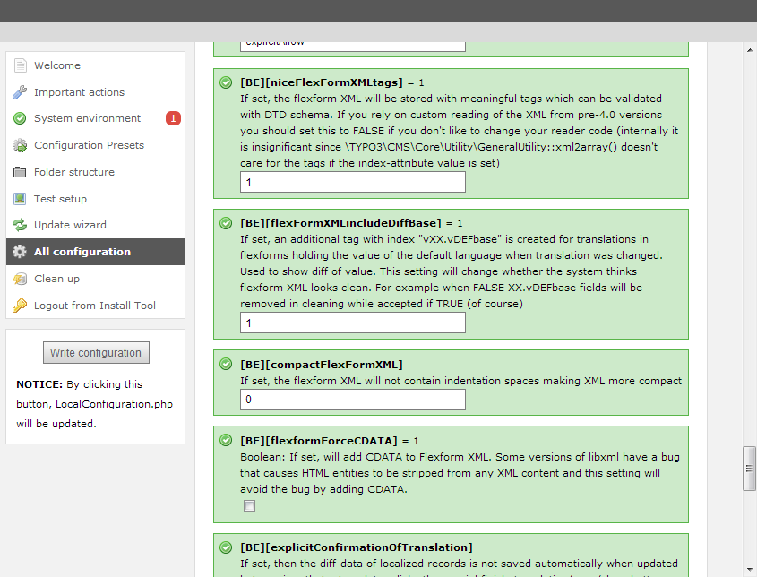
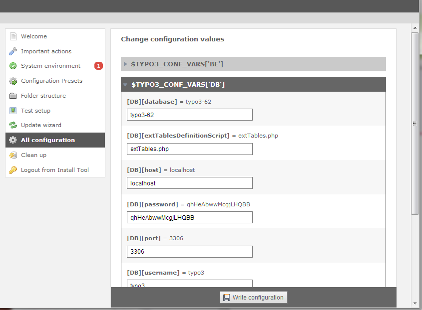

Feature #52087
Feature #51965: New Install Tool redesign opportunity
Install Tool > All Configuration: "Write Configuration" Submit button
| Status: | Resolved | Start date: | 2013-09-17 | |
|---|---|---|---|---|
| Priority: | Must have | Due date: | ||
| Assigned To: | - | % Done: | 0% |
|
| Category: | Interface | |||
| Target version: | TYPO3 6.2 LTS | |||
| Tags: |
Description
This was asked for in the core tracker: #38701.
The install tool has the "All configuration" section which lists all settings from $TYPO3_CONF. At the very bottom there is the button to submit the changes:

Now we have an accordion to expand each section, but if you open up i.e. the 'BE' section you still get multiple pages of options. The "Write configuration" button is place at the very end of this huge form:

The left-hand menu is now "fixed" as you can see, so it doesn't scroll down but stays while the rest scrolls.
What we now need for is a solution on where to place the "Write configuration" button so that it is always seem despite the current scrolling position.
Alternatives that popped up:
1) putting it redundantly below the left-menu which doesn't scroll:

This doesn't really appeal me.
2) Use the "docheader" when in Backend Mode. Would be "consistent" with the rest of the Backend, but on the other hand unexpected for the users that already know the Install Tool ("where can I save??"). The docheader for the "save" button is already known to be confusing enough.
3) Make the "Write configuration" button stick to the lower border of the window ("bottom:0") as soon as the user scrolls down, using some kind of background so that it stands out. Kind of like the "docheader" but at the footer. :)
Any suggestions from the UX team?
Thanks!
{kind=link}
{kind=link}
{kind=link}
{kind=link}
Related issues
History
#1 Updated by Jens Hoffmann almost 2 years ago
- Status changed from New to Accepted
- Priority changed from Should have to Must have
Thanks for your good Input!
I would go for Nr. 1 and
sticky would be the best.
Maybe the wording needs some finishing :)
Greez Jens
#2 Updated by Ernesto Baschny almost 2 years ago
- File install-tool-save-at-bottom.png added
My preference is some kind of the 3). Here is a suggestion:

The "Write configuration" button is always on the bottom and doesn't scroll (bottom:0), but visually separated. For the "standalone" install tool the background needs to be a lighter gray.
What do you think?
Note that on this draft I also changed the colors and styling of the configuration setting items: no more green boxes with checkboxes but instead dark headers like in the tables we have in the BE and zebra-styled rows (like in other tables...). Note that the arrows on the headers are wrong still (need to be white). That would deserve it's own issue of course, but maybe it fits already, then you could simply give a +1 on that too. ;)
#3 Updated by Jens Hoffmann almost 2 years ago
Thanks Ernesto. :)
I think this is a even better solution.
But we need to find something reusable.
It's a TYPO3 untypical solution and I would
like to find something, we already have.
The basic concept is good, the design needs
some streamlining with the rest of the BE.
The details of the concept are to different.
I will think about it and reply later on.
Greez Jens
#4 Updated by Ernesto Baschny almost 2 years ago
The Install Tool is already optically "a bit different" because
a) the fixed width content
b) the hanging left-menu
c) there is a "standalone" install tool which also has dark background etc
...
So why not keep some things in the Install Tool a bit different to make it clear that this is a "special module"?
#5 Updated by Jens Hoffmann almost 2 years ago
By the way .. the alternating BG and Accordion are helpful, too. :)
#6 Updated by Ernesto Baschny almost 2 years ago
With "helpful" you mean "look good"? :)
#7 Updated by Jens Hoffmann almost 2 years ago
I think it looks good, but needs some sweet "arty" finishing :)
#8 Updated by Ernesto Baschny almost 2 years ago
Jens, we'll continue with this "new styling" for now, so that we at least have some usability improvement. Also the alternating background image.
Once we have this merged (#38701, https://review.typo3.org/#/c/24187/) we can then continue improving upon it, ok?
It's also easier to show you how it works in action instead of in screenshots.
#9 Updated by Felix Kopp 8 months ago
Main feature "Toggle" included.
Further improvements within Bootstrap integration
#10 Updated by Felix Kopp 8 months ago
- Status changed from Accepted to Resolved